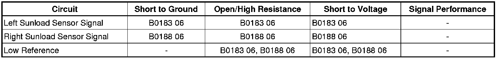

B0188
DTC B0183 or B0188
Diagnostic Instructions
* Perform the Diagnostic System Check - Vehicle (Initial Inspection and Diagnostic Overview) prior to using this diagnostic procedure.
* Review Strategy Based Diagnosis (Initial Inspection and Diagnostic Overview) for an overview of the diagnostic approach.
* Diagnostic Procedure Instructions (Initial Inspection and Diagnostic Overview)provides an overview of each diagnostic category.
DTC Descriptors
DTC B0183 06
- Solar Load Sensor 1 Circuit Short to Ground or Open
DTC B0188 06
- Solar Load Sensor 2 Circuit Short to Ground or Open
Diagnostic Fault Information

Circuit Description
The vehicle uses left and right sunload sensors that are integrated into one sensor assembly along with the ambient light sensor. Low reference and signal circuits enable the sensor to operate. The sensor signal varies between 0 and 5 volts. The HVAC control module converts the signal to a range between 0 and 255 counts. The sunload sensor provides the HVAC control module with a measurement of the amount of light shining on the vehicle. Bright or high intensity light causes the vehicles interior temperature to increase. The HVAC system compensates for the increased temperature by diverting additional cool air into the vehicle.
The following DTCs are for the left and right sunload sensors.
* B0183 is for the left sunload sensor.
* B0188 is for the right sunload sensor.
Conditions for Running the DTC
The ignition is ON.
Conditions for Setting the DTC
The HVAC control module detects the signal circuit is less than 5 counts or more than 250 counts.
Action Taken When the DTC Sets
* The driver information center (DIC) will display SERVICE A/C SYSTEM.
* If the DTC is set the system will act as if no sunload condition exists.
Conditions for Clearing the DTC
* The DTC will become history if the HVAC control module no longer detects the condition that set the DTC.
* The history DTC will clear after 50 fault-free ignition cycles.
Reference Information
Schematic Reference
HVAC Schematics (Electrical Diagrams)
Connector End View Reference
Component Connector End Views (Connector Views)
Description and Operation
Automatic HVAC Description and Operation (Automatic HVAC Description and Operation (Part 1))
Electrical Information Reference
* Circuit Testing (Component Tests and General Diagnostics)
* Connector Repairs (Component Tests and General Diagnostics)
* Testing for Intermittent Conditions and Poor Connections (Component Tests and General Diagnostics)
* Wiring Repairs (Component Tests and General Diagnostics)
Scan Tool Reference
Control Module References (Programming and Relearning)
Circuit/System Verification
Ignition ON, observe the appropriate scan tool Sunload Sensor. The reading should be between 5 and 250 counts and change with sunlight changes.
Circuit/System Testing
1. Ignition OFF, disconnect the harness connector at the sunload sensor.
2. Test for less than 10 ohms of resistance between the ground circuit terminal C and ground.
• If greater than the specified range, test the ground circuit for an open/high resistance.
3. Ignition ON, test for 4.8-5.2 volts between the ground circuit terminal C and the appropriate signal circuit terminal .
* Left solar load sensor circuit terminal A.
* Right solar load sensor circuit terminal B.
• If less than the specified range, test the signal circuit for a short to ground or open/high resistance. If the circuit tests normal, replace the HVAC control module.
• If greater than the specified range, test the signal circuit for a short to voltage. If the circuit tests normal, replace the HVAC control module.
4. If all circuits test normal, test or replace the sunload sensor.
Repair Instructions
Perform the Diagnostic Repair Verification (Verification Tests) after completing the diagnostic procedure.
* Sun Load Sensor Replacement (Service and Repair)
* Control Module References (Programming and Relearning)for HVAC control module replacement, setup, and programming